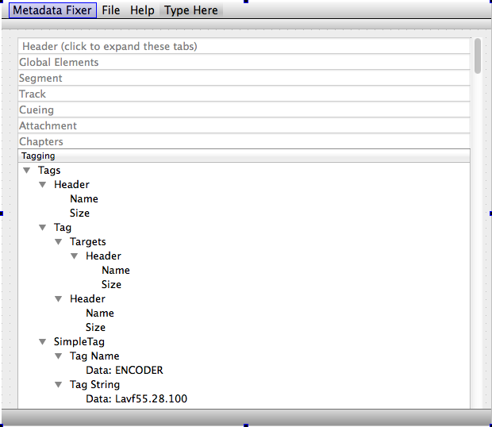
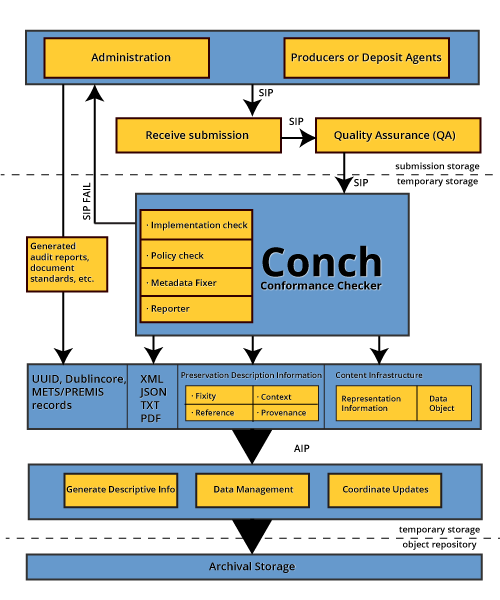

Conch
Conformance checking for media files
Jerome Martinez and David Rice
MediaArea.net
About MediaArea
"As a National Library incorporating the National Screen and Sound Archive of Wales, we have to preserve digital audiovisual material in perpetuity. Part of this work is characterising AV files and extracting technical metadata. We found no better tool at this job than MediaInfo, and the support and response from MediaArea SARL has always been excellent."
Former Chief Technical Officer of the National Library of Wales
Key players: Conch Team
Jerome Martinez, Lead/Developer
Dave Rice, Lead/Project Management
Guillaume Roques, Developer
Tessa Fallon, Research & Development: Standarization
Ashley Blewer, Research & Development: Design
Erik Piil, Research & Development: File Formats
Key players: Advisors
- Format advisors
- Institutional advisors
- Standardization advisors
The PREFORMA Challenge

Conformance Checker
Status of formats
- MKV
- FFV1
- LPCM
Standardization
Implementation
How to label and test a bitstream
Several layers: transport, container, stream

Implementation checker
- MKV: EBMLMaxSizeLength limit, DocTypeVersion, CRC-32...
- FFV1: Missing header, colorspace_type, bits_per_raw_sample, crc_parity...
- Container/Stream cross-check: PCM block duration and bitrate, MKV/FFV1 width...
Policy checker
- Must be BWF: container format must be WAV, audio format must be PCM, sampleRate must be 48000 or 44100, ...
- Custom policy check, e.g. PREFORMA: container format must be MKV, video format must be FFV1, audio format must be PCM...
- Very detailed check: MKV version, FFV1 version and micro_version, color space, bit depth, CRC-32 presence...
Reporter
Input: analysis of the file, policies, options
Computer readable Output: XML, JSON...
Human readable Output: HTML, PDF...
Metadata Fixer
- Add CRC, fix coherency between container and stream...
- Embed additional metadata
- Warning: not all is possible
Standardization of expression format for policy checks
MKV and Archives
User Interface Coverage
Command Line - Checker

User Interface Coverage
Graphic User Interface - Checker

User Interface Coverage
Graphic User Interface - Checker Debug

User Interface Coverage
Graphic User Interface - Policy Checker

User Interface Coverage
Graphic User Interface - Fixer
User Interface Coverage
Web Interface
Automation
- Periodical checks
- Detection of new files
Database side
Configuration
Analysis of the files
Policies
The Core
Interaction between all other elements

Optimization priorities
Data Exchange
Open Archival Information System
OAIS workflows

Outreach/Community

Involvement,
stakeholders,
and the open source community
Development Approach
- Github
- Agile development
- Stipended collaboratives
- Community involvement
Development Approach
- Cross platform
- Multiple developer interfaces (bindings)
- Multiple end user interfaces
Future Plans
Support, new feature requestsMediaArea Plans
Integration of other MediaArea's productsIntegration & Community
Trace feature demo
How to debug MKV and FFV1 trace